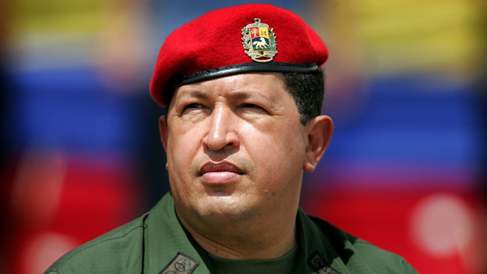
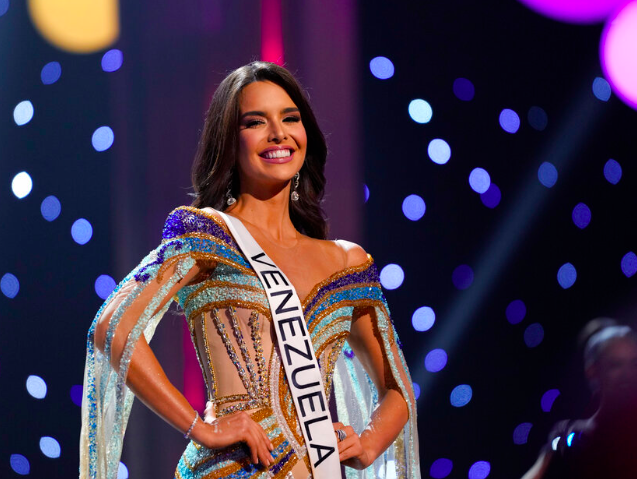

|
 |
Hugo Rafael Chávez Frías was a Venezuelan politician and military
officer who served as president of Venezuela from 1999 until his death
in 2013, except for a brief period of forty-seven hours in 2002.
Using record-high oil revenues of the 2000s, his government nationalized
key industries, created participatory democratic Communal Councils and
implemented social programs known as the Bolivarian missions to expand
access to food, housing, healthcare and education.
|
|
Amanda Dudamel Newman is a Venezuelan fashion designer, model,
philanthropist and beauty pageant titleholder who was crowned Miss
Venezuela 2021. She represented the Region Andina at the pageant. She
also represented Venezuela at the Miss Universe 2022 competition placing
as the 1st Runner-Up.Born: 19 October 1999 (age 24 years),
Merida, Venezuela.
She was born on 19th october 1999, her parents rafael dudamel, nahir
newman in venezuela.The major competitions she took part in were miss
venezuela 2021 in which she won and was titled miss venezuela 2021 and
she took part in miss universe 2022 and was the first runner up in that.
She is 1.78 m in height.
|
 |